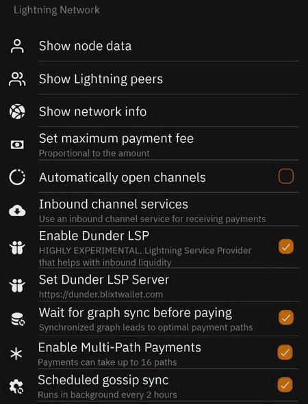

Table of Contents
Blixt Wallet contains three main sections, each one with specific options, features and utilities. The main screen it displays the Lightning wallet directly. LN is the main use of this app and will focus that. Also the main action buttons: send and receive, at the bottom of the screen.
The balance displayed on the main screen it represent ONLY the Lightning wallet balance. The onchain wallet balance is displayed in the other section of the app (top drawer menu). Reason why is there, you can read here.
Blixt Wallet Main Features
Neutrino Node
Blixt app connects by default to Blixt Server to sync the Bitcoin blocks and indexes with Neutrino (BIP157), but the user can also connect to its own Bitcoin node.
It is syncing the whole Bitcoin blocks (headers and filters) in less than 5 min, respecting user privacy. The wallet does not use any centralized servers for doing transactions, all transactions are broadcast directly from your Blixt app, into the Bitcoin mempool.
A mention at this point: Blixt app, will require some space for this sync on user device, around 1GB of data, from blocks sync and LN graph (network map).
Full non-custodial LND node
User can manage its own Lightning channels with an easy interface and enough information shown to have a good and smooth experience.
In the top left drawer menu you can go to Lightning channels and start opening with other nodes, as you wish.
These LN channels, by default will be un-announced channels (so called private channels). That means it will not be "visible" by other nodes in the network graph, only the node peer will know about it and will route your txs accordingly, through its other channels. Also private channels DO NOT route others payments.
So practically Blixt is a PRIVATE NODE, to offer you full control of your payment routes, in a private way, with the costs you decide.
So choose wisely with which node peer you will open LN channels fro your transactions. Is also worth mentioning that you should have at least 2-3 LN channels open in your Blixt for a better availability of routes and also taking advantage to use MPP (Multi-Part Payment), feature that is also available in Blixt.
You can check in the FAQ page for some recommendations how and with who can open channels.
Bitcoin On-Chain Wallet
This feature is quite hidden, because is not the main focus of this app. But it's easy to access it from the top left drawer menu.
Being not so often used by a power LN user, is not firstly visible on the main screen. But that's OK, you can have it like a separate wallet where you can manage addresses and see txs log. In the future could be included also more functionalities for this on-chain wallet, like coin control, RBF (Replace by Fee) etc.
Right now the main use of this on-chain wallet is to manage opening and closing LN channels and not as a regular day to day payments using on-chain transactions.
See a more detailed explanation about using Blixt onchain wallet in the Guides page.
Bitcoin Lightning Wallet
This is located on the main screen, as the main usage of the app. The balance displayed is only for this LN wallet and does NOT contain the on-chain wallet balance.
It have a simple function interface easy to use and offers all necessary options to receive and send sats over Lightning Network.
User can switch easily the displayed unit for the balance, with a simple click on the unit sign. Also it display the balance in local fiat currency, based on a average rate.
Blixt Wallet Options (settings menu)
In this section we will describe each Blixt Wallet functionality that you can find it in the "Settings" menu, for a better understanding.
There are specific sections in this menu: General | Wallet | Security | Display | Bitcoin Network | Lightning Network | Miscellaneous | Experiments | Debug
General section
Name
This option will help the user to send a specific name in a payment, but only when is desired and necessary, is totally optional. It can be whatever name and is stored only on the device.
IT IS NOT the LN node alias! Blixt Wallet do not use node alias, is a private LN node.
Language
Default language is English. Other available languages are: Spanish, German, French, Sweedish, Klingon. Soon more languages will be available.
Push Notifications
This is a simple function that notify the user with messages about transactions and channel events, when the app is working in background.
Check clipboard for invoices
This option when is activated, will check automatically device clipboard for invoices and when the app is open, will bring up the payment screen, for an easy and simple user experience making payments.
Save geolocation of transaction
Very useful tool, to add, privately, for each of your payment, a note with a location where was executed. Sometimes, you can't remember where you was paying and you want to keep track of your spendings.
This option is totally optional, so if you are worried about your privacy and/or your device could be stolen and you didn't secure it well, you can keep disabled this option. Anyways, the data is stored ONLY locally on the device.
Wallet section
Show mnemonic
This option is used to make a backup of your 24 words wallet seed. It can be accessed anytime, multiple times. Save those words in a safe place! This is serious, save the seed immediately after you created the new wallet!
Remove mnemonic from device
This option is an extra security measure, that after you made the backup of your seed, you can remove it totally from your device.
Remember: do not use this option if you do not make the backup first!
It can be used only in case you are afraid that your device could be stolen, seized or accessed accidentaly by somebody else. Removing the seed from your device it doesn't mean is removing the wallet and LN node, is just the seed words. Wallet will work just as usual.
Export channel backup
This is a VERY IMPORTANT feature for your Blixt Wallet. Do not ignore it! It would be used in case of SHTF and you need to recover your funds remained in LN channels.
When is clicked, it will point the user to select a location on his device to save a copy of Blixt LN channels database (SCB).
After is saved, it is strongly recommended to make a copy of that file (even move it away from the device) into a safer location.
Better keep a copy of this file together with your Blixt seed words, locked in a password manager.
Make this export backup EVERY time you open or close a channel. NOT every time you do a transaction. So would not be so often and could take just few seconds to save it and move it away from your device.
User also have the option to save Blixt channels backup into Google drive and / or local storage in its own mobile device (later move that file into a safe location, out of your device).
The restore procedure is quite simple: insert the 24 words seed, add the backup file (previously copied into mobile memory) and click restore. It will take some time to sync and scan all the blocks for your txs in the past. Channels will be automatically closed and funds returned to your onchain wallet (see the drawer menu on the left top - onchain).
Read more about how to restore a LND wallet into Blixt in the Blixt FAQ page.
Security section

Login with PIN code
This a security feature to add a PIN number when the app is open and protect from unauthorized access to your device. User will be prompted 2 times to set a personal PIN.
Keep in mind to save it (maybe together with your seed) in a safe place and don't forget it. App will be impossible to open after that. The only way to restore it will be through full Blixt Wallet restore (seed + channels.backup) and reinstall app. That will imply closing channels, fees, time and possible stress.
Login with fingerprint
This a security feature will prompt the user to use his fingerprint in order to be able to open Blixt app and protect it from unauthorized access.
Scheduled chain sync
This option by default is activated and is better to stay like that. It will run the Neutrino sync of blocks, every 4 hours, if the app is active.
If this option is disabled, the node stop working and the whole Blixt app will not function properly. Once is reactivated, is better to restart the app, so the lnd node start its services correctly.
Display section

Fiat currency
User can set a local fiat currency and use it to display as main unit in the wallet or just as optional value under bitcoin/satoshis amount. The rate is calculated based on an average rate from main exchanges and markets.
Bitcoin unit
This option let the user to decide how the main balance, transactions and channels are displaying the bitcoin units (BTC, sats etc).
Onchain explorer
This is used to check transactions in the different block explorers available. Default is mempool.space explorer. User can choose between: Mempool, Blockstream, Oxt, Blockchair, or custom (own node for example).
Bitcoin Network section
Bitcoin Node
User can set a specific Bitcoin node to sync blocks, can be own node or any other Bitcoin node that support BIP157 (Neutrino sync).
By default Blixt Wallet app have set "node.blixtwallet.com", but can be left also blank and will connect with any available server.
The new version of Blixt v0.6.x that comes with LND 0.15.x, supports also Tor v3 onion address for Bitcoin nodes. So you can use your personal home node that runs behind Tor and doesn't have a clearnet IP/domain set. Or any other private node.
Enable receiving onchain via Taproot (P2TR)
This option is available due to newest support in LND v0.15 for Taproot addresses and Blixt support it only from v0.6.x upward.
Taproot (P2TR) is a new set of address type for Bitcoin onchain address with new functionalities and privacy options. Read more about Taproot here.
Lightning Network section

Show node data
This is an important section where are displayed more details about your Blixt LN node, very useful and good to have them saved for later use. Keep in mind that these information will not be "visible" on public LN explorers, Blixt being a private/unannounced node and channels. This information can be used only in direct connection with other peers.
Technical information displayed will be:
- Node Alias - short ID for your LN node
- Chain - bitcoin mainnet or testnet
- Best header timestamp - when was the last block synced
- Block Hash - latest block hash number
- Block Height - latest block number that was synced (Bitcoin Time)
- Identity PubKey - your node full ID, used to connect with other peers. This is a valuable information, keep it at hand.
- Num Channels - displays the total number of channels you have on your Blixt node (active, inactive, pending)
- Num peers - the total number of peers your node is connected in that moment. Peers doesn't mean exactly how many channels you have, could be more or less, depending on your traffic.
- Synced to chain - true/false showing the syncing status in general of your Blixt node.
- LND version - shows the LND node software version that is used in Blixt.
- Node features - displays the specific technical features activated for your node.
Show Lightning peers
This screen will display each Lightning peer that your blixt is connected to, with more technical details for each. Also offers the possibility to connect to other peers by clicking the "+" button and scan or add peer URI. This option is useful when you want to route a payment through a specific node, send a keysend payment, you want to open a channel with, or you lost the peer connection and you want to re-connect.
Keep in mind that if you want to add peers that are behind Tor you would need to activatre first the Tor option in your Blixt settings and restart the Blixt app.
Automatically open channels
A basic LND feature, that offers to the user a simple way to automatically open his first LN channel.
By default, this option is enable, to provide to the first time user of Blixt an easy way to open quickly a LN channel. This is a good feature for new users that do not know too much about with which node and how to open a LN channel.
Can be deactivated, if the user want another method to open the first LN channel.
Remember: this option is used only once, when you create your new Blixt wallet and is activated. So if the new user, see the onchain QR code on the main screen and deposit to this address his first sats, Blixt will open automatically a channel with those sats, with the Blixt public node.
After this first time use feature, Blixt app will ignore it and user have to open manually new LN channels or use Dunder LSP feature.
Inbound channel services
This is a dedicated feature in special for merchants or power users that need more INBOUND liquidity. Inbound liquidity means more available space in a LN channel to RECEIVE more sats.
It is easy to use, just go and activate it, select one of the liquidity providers in the list, for the moment Thor Bitrefill and LNBIG, pay the amount you want for the channel and provide your Blixt Tor onion nodeURI towards the channel will be open.
Wait for graph sync before paying
This option is by default disabled and is quite technical. Is used mostly when user wants to have specific optimal payment paths or wants to have clear hops in a payment.
Keep in mind that activating this option, could bring a slower startrup and lnd could take longer in syncing the actual graph before being able to make a payment. Is better to activate it just in specific moments when you want to update your local graph cache and want to clear up some old zombie channels. Be aware could take some time so check in lnd logs the status.
Miscellaneous section

About
Displays the usual more technical details about Blixt developer, software used, Github information and licenses.
Copy app log to local storage
This option gives to the user a way to export all app logs to a selected folder on local device. Later the log (txt) file could be consulted or sent for debug to developer or support team.
Copy lnd log to local storage
This option is very useful to export for debug the lnd node logs, to a selected folder. Once is clicked, the user is prompted to select a destination folder. Later the log (txt) file could be consulted or sent for debug to developer or support team.
Automatically hide expired invoices
This option will remove the invoices that were not fulfilled and user don't want to keep them visible in the main screen. But if you are testing payments and you set a higher time to expire the invoices you created, you can re-use past unpaid invoices from the list.
Sign message with wallet key
Very powerful feature, that offers a way to sign specific messages or actions, using the unique wallet key as authenticator. This could have various use cases, from validating a Bitcoin address, login into a webservice, even opening a hotel door.
Experiments section

This section is named "experiments" because the options displayed are still in development and are not fully tested in stressed conditions and are in a continuous change. So the user should take that in consideration and use them with caution.
Enable Dunder LSP
An amazing feature-service that offers to the new user the possibility to start accepting BTC over Lightning Network straight away, with no need to deposit funds onchain and after that opening LN channels.
For new users this is a quick and easy experience, because is supposed that they can start from zero, directly into LN.
In the future Blixt can modify the size of opening a new channel if there are too many inquiries. This is a free service for now, to easy onboard new users and make a seamless experience directly into Lightning Network.
Read more about Dunder LSP development here.
Read a more detailed guide about using Dunder LSP in the Blixt Guides page.
Enable Multi-Path Payments
Very powerful feature for a LN wallet. When is enabled a larger payment is split in smaller parts can can take more paths.
In this way is using channels and peers in a more efficient way and avoid stuck payments, due to low liquidity on the way.
Default is not enabled, but is good to use it when you want to do a larger payment. For small payments is not used.
Enable Tor
Once is activated, the Blixt app will restart using the Tor network. From that moment you can see in menu settings - Node Info, your nodeID with an onion address, so other nodes can open channels towards your little mobile Blixt node.
Or let's say you have your own machine node at home and want to have a channel with your mobile Blixt node. A perfect combination. See more details in Blixt Guides page.
Invoice expiry
This option is for when the user want to create a specific LN invoice with a specific expiring time (longer usualy). Default is 3600 seconds.
Keep in mind that using a longer time to expire, doesn't mean you can close your Blixt Wallet, to receive that invoice, you still need to keep open your Blixt app, to keep the channels online and your Blixt node being reachable.
Debug section

Show startup info notifications
This option, when is activated, and Blixt app is starting up, will show debugging notifications at the bottom of the screen. It is used mostly for power users when is wanted to diagnose the app starting services.
Rescan wallet
Very useful tool, when user have missing UTXOs in onchain wallet, or after closing channels, funds are not appearing refunded.
Once is activated, Blixt app must be restarted. The process is done when lnd is starting and after a quick sync will start scanning all blocks for used BTC addresses, adding the transaction history in the onchain wallet.
LND Mobile Help Center
A very useful and powerful tool to diagnose, debug and test Blixt Wallet and lnd node status and services. It can be used when the user is in contact with Blixt developer or help support in Telegram, to identify possible issues.
Get node info
Simple tool to get more information about a remote node. User must provide a nodeID.
Read LND log
Very good tool to check lnd logs and diagnose when wallet is having issues. Also logs could be copied and send to developer for further debugging. But in general is used to check the starting up services and connections, syncing etc.
Activate Demo Mode
A nice way to test Blixt app, used more for demonstrations and not using real data and sats. It is used only once when activated. After restart is coming back to normal real wallet.
Disable lnd graph cache
A debugging tool to help a faster startup and diagnose possible issues. Is used more with assistance from Blixt developer.
Blixt Wallet Functions (top left drawer menu)
Channels status icon
Once is open the top drawer, user will see a small icion on top right, that indicate the status of the LN channels. This is a very useful tool to consult before making a payment.
Sometimes users are in a hurry or didn't used for some time their Blixt wallet and just open it to pay quick. Is normal, we all do that.
But Blixt carees about its users and added a special little icon in the top drawer, next to the logo, like a simple indicator light bulb, changing the colors, indicating the status of LN channels, if are ready, waiting or operational.
Red - channels are offline | Yellow - starting up | Green - channels are ready, active
Paste from clipboard
A simple action button that can paste an invoice from clipboard to be paid. Will bring up the payment screen with invoice details already filled and user just have to press "send" button.
Send to Lightning Address
Powerful function of Blixt wallet, integrating payments to Lightning Address. User can paste or type a lightning address and also can save it into contact list.
Blixt have implemented full support for LNURL protocol, Blixt users can pay, withdraw, authenticate using LNURL within Blixt wallet.
It is planned also to have a Blixt Lightning Address through a new feature (in development) "Lightning Box".
Contacts and Services
Useful function if you want to have a stable list of destinations where you are going to pay most of the time. This contact list can be LNURL, Lightning Address or future static payment information/invoices. For the time being this list can't be backed up, but there are plans to have an option to export it and also with more options.
Lightning Browser
WebLN - is a library and set of specifications for lightning apps and client providers to facilitate communication between apps and users of lightning nodes in a secure way.
Blixt offers a series of 3rd party LN services, organized together into a nice simple browser accessible and quite handy.
It's a nice way also to promote businesses that accept BTC over LN. This is a feature to be more developed in the future. For the time being it doesn't work behind Tor so browsing these apps will be in clearnet.
On-chain wallet
Dedicated function to operate only the onchain part of Blixt wallet. The main screen will display the onchain balance and a QR code and a BTC address that can be used to deposit to.
On top right you can click on the transactions list button to consult all onchain past transactions. You can open each one to see more details, txid etc.
This function is mostly used to deposit funds, then consulting opening and closing channels transactions.
Lightning Channels
This function will open a screen that contain all information about Blixt Lightning channels.
Here the user can open and close LN channels, consult the status of each one, funds available per channel.
Keysend Experiment
To show up this function, user must click on the "Advanced" sub-drawer.
Very powerful function that few other mobile wallets have it. You can send / push funds directly through a peer channel or pointed to another node, adding a message if is necessary.
Keysend doesn't require any prior LN invoice to be generated, so be aware that once the funds are sent, the user cannot have any other proof, only the secret hash from its own transactions log. For a keysend payment between 2 peers, this payment is totally private.
This feature is very useful for sending paid messages through LN, posting messages on Amboss.space Billboard (here is a guide about how to use that Amboss billboard).
"Easter eggs / Blixt God Action"
Yes, inside the Blixt app, there are like hidden features, small things that make the app delightful, activating interesting actions and responses. Hint: test clicking twice the Blixt logo in the drawer :) Will let you discover all the rest.
The "Blixt God Action" can be activated with a long press on specific text or option inside app. That action will activate "GodMode" in Blixt and will bring up more actions, like copy the text, hidden actions or popups.